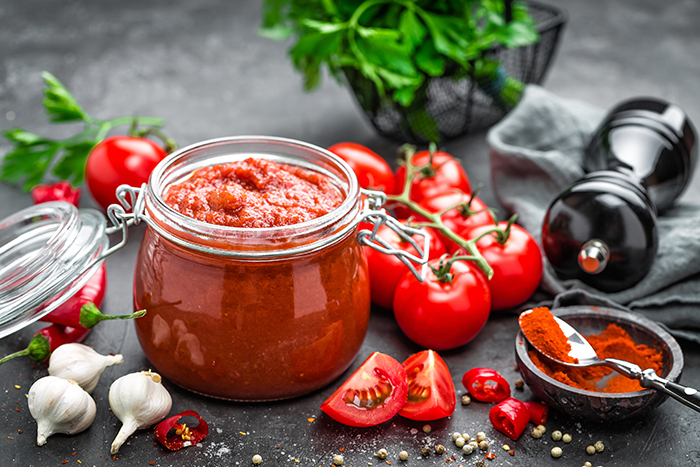

How to make the best Matboucha

Ingredients
- 3/4 pound green bell peppers
- 1 medium jalapeno
- 56 ounces diced tomatoes
- 1 clove garlic
- 1 teaspoon chili pepper flakes
- 1/2 teaspoon salt
- 1/3 cup extra virgin olive oil
- 1 tablespoon paprika
Instructions
- Roast the bell peppers. Seed the peppers and peel off the charred skin. For instructions on how to roast bell peppers, click here. Chop the roasted skinned pepper flesh.
- Seed the jalapeno, then mince it. If you have sensitive skin, use gloves for this step. You can add more jalapenos for more heat if you like a spicy matbucha. As written, the recipe has a little kick, but it's not overly spicy.
- In a medium saucepan, combine diced tomatoes, roasted bell peppers, minced jalapeno, garlic, sugar, chili pepper flakes, and salt. Bring to a simmer over medium high heat.
Reduce heat to around medium low, till the matbucha is cooking at a medium and constant simmer. Monitor the temperature of the matbucha, stirring every ten minutes to make sure it doesn't start to stick to the bottom of the pan. Let the mixture cook for 65-75 minutes till most of the liquid has reduced and cooked down.
- In a medium saucepan, combine diced tomatoes, roasted bell peppers, minced jalapeno, garlic, sugar, chili pepper flakes, and salt. Bring to a simmer over medium high heat.
Reduce heat to around medium low, till the matbucha is cooking at a medium and constant simmer. Monitor the temperature of the matbucha, stirring every ten minutes to make sure it doesn't start to stick to the bottom of the pan. Let the mixture cook for 65-75 minutes till most of the liquid has reduced and cooked down.
- When most of the liquid has evaporated and the mixture is quite thick, you are ready to add your oil.
- In a small bowl, whisk together olive oil and paprika.
- Pour the seasoned oil into the pan and stir.
Let the matbucha cook for about 30 minutes more, stirring every 5 minutes. Towards the end of cooking, taste the mixture and adjust seasoning as desired-- more sugar for sweetness, chili pepper flakes for spice, and salt if needed.
- Remove the matbucha from heat and allow to cool completely. The salad is best served at room temperature or chilled.